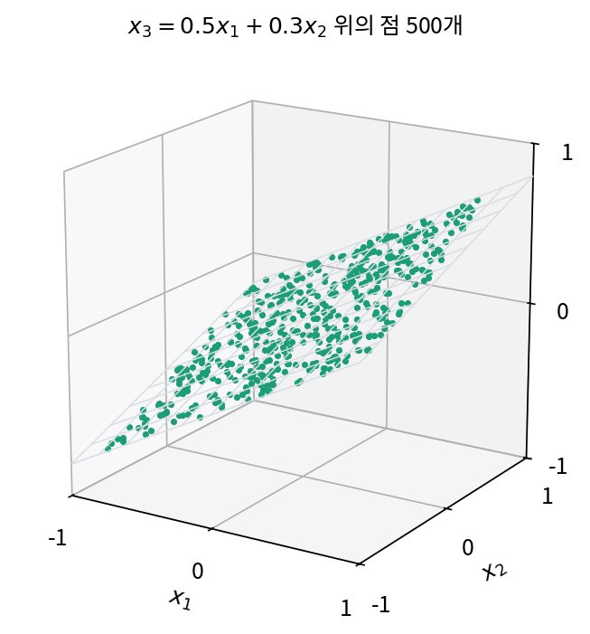
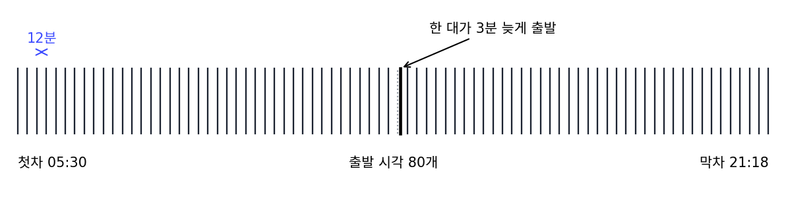
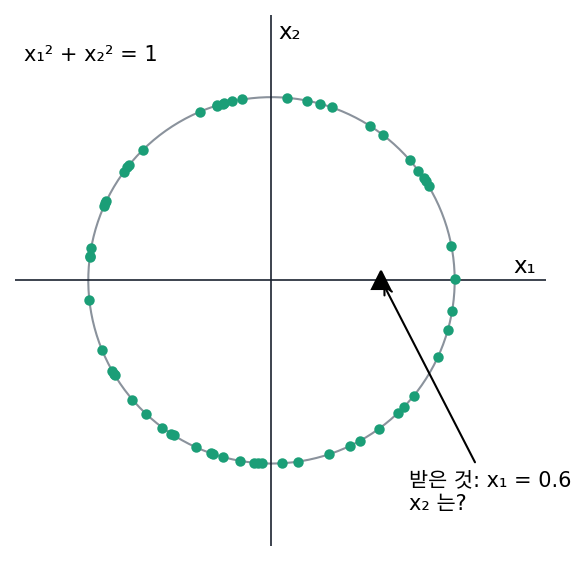
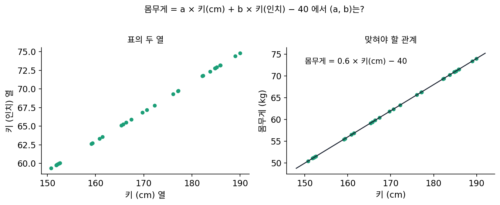

예측할 수 있으면 낮은 차원
이 장의 물음
가로세로 32칸짜리 흑백 그림 한 장은 칸마다 밝기 숫자가 하나씩, 모두 1,024개의 숫자로 적힌다. 칸마다 0과 1 사이의 숫자를 아무렇게나 뽑아 그림을 만들어 보면 지지직거리는 노이즈만 나온다. 그런데 그림을 만드는 생성 모델은 사람 얼굴을 잘도 그려 내고, 이미지 생성 모델 가운데 많은 수는 그림을 숫자 개수가 수십분의 일로 줄어든 공간으로 옮긴 뒤에 그 안에서 그림을 만든다. 칸을 그렇게 줄여도 그림을 그리는 데 필요한 것이 남아 있다는 뜻이다.
숫자 1,024개 가운데 정말로 따로 정해야 하는 것은 몇 개일까? 따로 정해야 할 숫자의 개수를 묻는 일은 「얼마나 짧게 적을 수 있나」라는 이 책 전체의 물음과 맞닿아 있다.
- 규칙이 있는 자료를 적을 때, 규칙은 적어야 할 숫자를 어떻게 줄여 줄까?
- 점들이 칸 수보다 적은 방향으로만 퍼져 있다는 것을, 규칙을 모르는 채 점들만 보고 잴 수 있을까?
- 그럴듯한 그림은 1,024칸이 만드는 넓은 공간에서 어디에 모여 있을까?
- 다음 값을 맞힐 수 있다는 것과 따로 적어야 할 숫자가 적다는 것은 어떤 관계일까?
자유도: 규칙 하나가 숫자 하나를 덜어 준다
마트 영수증에는 물건마다 단가, 수량, 금액이 적혀 있는데, 금액 칸은 단가와 수량을 곱하면 나오므로 사실 적을 필요가 없다. 영수증의 세 칸 가운데 따로 알려 주어야 하는 것은 두 칸이고, 나머지 한 칸은 「금액 = 단가 × 수량」이라는 규칙이 채운다. 자료를 표로 적다 보면 섭씨와 화씨를 함께 적은 기온 표, 출생 연도와 나이를 함께 적은 명단처럼 이런 일을 자주 만난다. 칸은 셋인데 정해야 할 것은 둘이라면, 칸 수와 정해야 할 숫자의 수를 따로 셀 말이 있어야 한다. 규칙은 적어야 할 숫자를 몇 개나 덜어 줄까?
기운 평면 위의 점 500개
규칙이 하는 일을 숫자로 세려면, 규칙을 우리가 이미 아는 자료로 시작하는 것이 좋다. 3차원 공간의 점 500개를 만들되, 모두 기운 평면 x₃ = 0.5x₁ + 0.3x₂ 위에 정확히 놓이게 했다. 점 하나는 좌표 (x₁, x₂, x₃) 세 숫자로 적힌다. 처음 두 점은 (−0.772, −0.846, −0.640)과 (0.351, 0.041, 0.188)인데, 0.5 × (−0.772) + 0.3 × (−0.846) = −0.640, 0.5 × 0.351 + 0.3 × 0.041 = 0.188로 셋째 좌표가 앞의 두 좌표에서 그대로 나온다(계산은 sources/low-dimension/s1_dof.py).

점 500개를 좌표 그대로 적으면 숫자 1,500개가 들지만, 규칙을 알면 이야기가 달라진다. 받는 쪽에 규칙의 두 숫자 0.5와 0.3을 한 번 알려 주고, 점마다 (x₁, x₂)만 보내면 받는 쪽이 x₃을 계산해 채운다. 그러면 숫자는 2 + 1,000 = 1,002개로, 점 하나에 새로 적어야 하는 숫자가 셋에서 둘로 줄었다.
이렇게 규칙을 안 뒤에도 점 하나마다 새로 정해야 하는 숫자의 개수를 자유도 (규칙이 남겨 둔 움직일 수 있는 방향의 수, degrees of freedom)라 한다. 영수증 한 줄의 자유도는 2, 기운 평면 위 점의 자유도도 2다. 칸 수는 표가 정하지만 자유도는 자료가 따르는 규칙이 정해서, 규칙 하나가 칸 하나를 다른 칸들로 계산할 수 있게 해 주면 자유도가 하나 준다.
점이 많을수록 규칙을 한 번 적는 값 m은 작아 보이고, 점 하나가 아끼는 칸 수 d − k가 쌓인다. 규칙을 찾는다는 것은 이 덧셈에서 k를 줄이는 일이다. 다만 여기서는 규칙을 우리가 정해 놓고 시작했지만, 실제 자료에서는 규칙을 모르고 점이 평면 위에 정확히 놓이지도 않는다.
ML에서: 같은 것을 두 번 적은 열
표 자료로 모델을 학습할 때 같은 정보를 다른 단위로 두 번 담은 열이 섞여 들어오는 일이 흔하다. 키를 센티미터와 인치로 함께 적은 열, 가격과 부가세 포함 가격을 함께 적은 열이 그렇다. 표의 열 수가 겉보기 칸 수라면, 이런 열은 자유도를 늘리지 않는다. 선형 회귀처럼 열마다 가중치를 하나씩 붙이는 모델에 이런 열이 들어가면 가중치는 어떻게 정해질까? 아래 문제 3에서 따져 본다.
문제 1. 버스 시간표
정류장에 붙은 시간표에 첫차 05:30부터 막차 21:18까지 버스 80대의 출발 시각이 적혀 있다. 버스는 12분마다 온다. (가) 시간표를 다른 사람에게 알려 주려면 숫자 몇 개가 필요한가? (나) 그런데 한 대가 공사 때문에 3분 늦게 출발하도록 바뀌었다. 이제 몇 개가 필요한가?


시각이 80개니까 80개요.

받는 사람이 첫차 시각과 간격을 알면 나머지를 스스로 계산할 수 있지 않나요?

아, 첫차 05:30, 간격 12분, 대수 80. 세 개면 되네요. 05:30에 12분을 79번 더하면 21:18이 맞게 나와요.

(나)는 규칙이 깨졌으니까 다시 80개를 다 적어야 하는 거 아니야?
늦어진 버스가 한 대뿐인데도요?

아니네요. 규칙 세 개는 그대로 두고 「몇 번째 버스가 몇 분 늦는다」만 덧붙이면 돼요. 3 + 2 = 5개요. 규칙에서 벗어난 것만 따로 적는 거예요.

조별 과제 회의록도 그래요. 「매주 화요일 7시」라고 한 줄 적고, 시험 기간에 한 번 미룬 날만 따로 적어 두면 돼요.
문제 2. 원 위의 점
점이 반지름 1인 원 x₁² + x₂² = 1 위에 흩어져 있어서, 점 하나를 적는 칸 수는 2다. (가) 자유도는 몇인가? (나) 규칙 x₁² + x₂² = 1을 알 때, 점마다 x₁만 보내면 받는 쪽이 x₂를 알아낼 수 있는가? x₁ = 0.6인 점으로 따져 보라.

기운 평면이랑 같아요. 규칙 하나가 칸 하나를 채우니까 자유도는 1이고, x₁만 보내면 되죠.
x₁ = 0.6이면 x₂² = 0.64라서 x₂는 0.8이야. 응, 되네.
x₂² = 0.64를 만족하는 x₂는 하나뿐인가요?

아, −0.8도 있어요. 원 위에 x₁ = 0.6인 점이 위아래로 두 개예요. x₁만으로는 둘 중 어느 쪽인지 몰라요.

그럼 자유도가 1이 아닌 거예요?

점이 원을 따라 한 방향으로만 움직인다는 사실은 그대로예요. 문제는 x₁이라는 칸이 그 움직임을 다 담지 못한다는 거죠. 원 위의 위치를 숫자 하나로 다 적으려면 어떤 숫자를 쓰면 될까요?
원을 따라 움직이는 걸 그대로 재면 되니까… 각도요?
x₁ = 0.6인 두 점의 각도를 구해 볼까요?
x₂ = 0.8인 점은 53.13°, x₂ = −0.8인 점은 306.87°예요. 겹치지 않네요.

각도 하나면 두 점이 갈려요. x₁을 보내겠다면 위인지 아래인지 한 비트를 더 붙여야 하고요.
그래요. 자유도는 「움직일 수 있는 방향의 수」이고, 어느 칸이 그 방향을 담는지는 따로 골라야 해요. 기운 평면에서는 마침 x₁, x₂ 두 칸이 그대로 쓸 만했던 거고요.

해석학 시간에 원을 그래프 하나로 못 쓰고 위 반원, 아래 반원 두 개로 나눠 썼던 거랑 같네요.
문제 3. 키를 두 번 넣은 회귀
몸무게(kg)를 키로 맞히는 선형 회귀를 만드는데, 표에 키가 센티미터 열과 인치 열(인치 = 센티미터 ÷ 2.54)로 두 번 들어 있다. 모델은 몸무게 = a × 키(cm) + b × 키(인치) − 40이다. 자료에 꼭 맞는 관계가 몸무게 = 0.6 × 키(cm) − 40일 때, (a, b)는 한 가지로 정해지는가?

인치 열이 없었으면 a = 0.6이었으니까 a = 0.6, b = 0이 답이죠. 돌려 봐도 키 170cm에 62kg이 나와요.
a = 0, b = 1.524로 해도 170cm에 몇 kg이 나오는지 계산해 볼래요?
1.524 × 170 ÷ 2.54 = 102니까… 62kg이에요. 똑같아요.
a + b ÷ 2.54 = 0.6만 맞으면 다 같은 답이 나와. a = 10.6, b = −25.4도 돼. 0.6을 두 열이 어떻게 나눠 갖든 상관없는 거야.
그럼 학습은 이 가운데 무엇을 고를까요?
자료만 봐서는 고를 근거가 없어요. 손실이 모두 똑같으니까요. 처음 값이나 학습 방법에 따라 아무 데나 멈추겠네요.
그래서 실제로는 가중치가 크지 않게 페널티를 붙이는 경우가 많아요. a² + b²가 가장 작은 쌍을 고르면요?
계산해 보니 a = 0.5195, b = 0.2045예요. a² + b²가 0.3117이라 a = 0.6, b = 0의 0.36보다 작아요. 두 열이 나눠 맡네요.
나누는 비율은 누가 정했을까요? 자료일까요?
자료가 정해 주는 건 a + b ÷ 2.54 하나뿐이었잖아요. 열은 둘인데요. 그러니까 남은 하나는 페널티가 정한 거예요.

자료가 못 정한 숫자 하나를 페널티가 대신 골라 준 거네요.
버스 시간표랑 같은 얘기예요. 인치 열은 센티미터 열에서 계산되는 칸이라 새로 알려 주는 게 없어요.